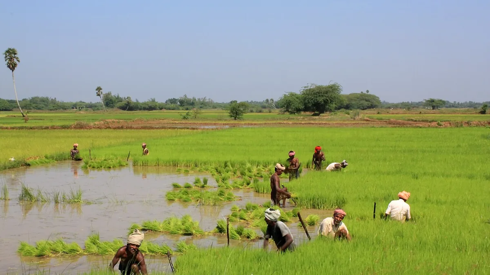

காவிரி டெல்டாவின் மிகப் பெரிய பயிரின் முழு வருமானமும் ஒரே தேதியில் தங்கியுள்ளது. இரண்டு வார தாமதம் அறுவடையை நேராக டிசம்பர் புயல் மழைக்குள் தள்ளிவிடும்.
✍️ Kunal Rajput — KrashiMitra⏱️ 9 நிமிடம் படிக்க📅 ஆகஸ்ட் 2026

தஞ்சாவூர் மாவட்ட நெல் வயல்கள் — காவிரி டெல்டாவின் இப்பகுதிதான் சம்பாவின் முதன்மைப் பரப்பு.
சம்பா நெல் — ஒரே பார்வையில்
🗓️
ஆக.15-செப்.7
நீண்ட கால ரக நடவு
🌾
180 நாள்
பயிர்க் காலம்
💰
₹2,600
சாதாரண நெல், குவிண்டால்
📖
முன்னுரை
காவிரி டெல்டாவின் ஆண்டின் மிகப் பெரிய நெல் பயிர் சம்பா. அதன்
முழு வருமானமும் ஒரே ஒரு விஷயத்தில் தங்கியிருக்கிறது — நடவு
செய்யும் தேதி. ஆகஸ்ட்-செப்டம்பரில் நடவு செய்யப்பட்ட சம்பா
ஜனவரி-பிப்ரவரியில் அறுவடைக்கு வரும். இரண்டு வாரம் தாமதப்படுத்தும் விவசாயியின்
அறுவடை, டிசம்பர் புயல் மழையிலேயே சிக்கிக்கொள்கிறது — நிற்கும் பயிர் சாய்ந்து
நெல்மணி கருப்பாகிவிடும்.
மிகவும் விலை உயர்ந்த தவறான புரிதல் இதுதான்: "தண்ணீர் வரட்டும், அப்புறம்
நாற்றங்கால் போடலாம்". நாற்றங்கால் முன்கூட்டியே தயாராக இருக்க வேண்டும் —
தண்ணீர் வந்தவுடன் நடவு நடக்க வேண்டும். இந்தக் கட்டுரை சம்பாவின் சரியான தேதி,
ரகம், நாற்றங்கால், உரம், பூச்சி-நோய் மற்றும் ஆதரவு விலையில் விற்பனை — அனைத்தையும்
முழுமையாகத் தருகிறது.
விளம்பரம்
🔍
சம்பா என்றால் என்ன — குறுவை, தாளடியிலிருந்து எப்படி வேறுபடுகிறது?
காவிரி டெல்டாவில் நெல்லுக்கு மூன்று பருவங்கள் உண்டு. அவற்றுள் சம்பா மிக நீண்ட,
மிகப் பெரிய பயிர் — கிட்டத்தட்ட 180 நாட்கள். ஆகஸ்டில் நடவு
செய்தால் பிப்ரவரி வரை வயலில் நிற்கும். குறுவை முழுக்க முழுக்க மேட்டூர் அணை
நீரை நம்பியது; சம்பா ஆனால் கால்வாய் நீர் மற்றும்
வடகிழக்குப் பருவமழை — இரண்டையும் நம்பியது.
பருவம்
நடவு
காலம்
அறுவடை
குறுவை
ஜூன்-ஜூலை
105-115 நாள்
செப்டம்பர்-அக்டோபர்
சம்பா
ஆகஸ்ட்-செப்டம்பர்
~180 நாள்
ஜனவரி-பிப்ரவரி
தாளடி
செப்டம்பர்-அக்டோபர்
135-145 நாள்
பிப்ரவரி-மார்ச்
💡
குறுவை எடுக்கப்பட்ட வயலில் அதற்குப் பிறகு தாளடிதான் நடவு
செய்யப்படும், சம்பா அல்ல — ஏனெனில் குறுவை அறுவடை செப்டம்பரில் முடிகிறது,
அதற்குள் சம்பாவின் சரியான தேதி கடந்துவிடும்.
🗓️
மிக முக்கியமான விஷயம் — நடவு செய்யும் தேதி
வேளாண் நிபுணர்களின் ஆலோசனை தெளிவானது: நீண்ட கால சம்பா ரகங்கள் ஆகஸ்ட் 15
முதல் செப்டம்பர் 7 வரை நடவு செய்யப்பட வேண்டும்; நடுத்தர கால
ரகங்கள் செப்டம்பர் முழுவதும். இதன் நோக்கம் ஒன்றே — டிசம்பர்-ஜனவரியின்
கனமழைக்கு முன்பே பயிரை முதிர்ச்சி நிலைக்குக் கொண்டுவருவது.
எந்த வேலை
✅ சரி
❌ தாமதம்
நாற்றங்கால் போடுதல்
ஆகஸ்ட் முதல்-இரண்டாம் வாரம்
செப்டம்பருக்குப் பிறகு
நாற்று வயது
25-30 நாள் நாற்று
40 நாளுக்கு மேல், வேர் இறுகிவிடும்
கதிர் வெளிவருதல்
நவம்பர், மழைக்கு நடுவே
டிசம்பர் இறுதி, புயல் நேரம்
அறுவடை
ஜனவரி-பிப்ரவரி, வறண்ட காலநிலை
மார்ச், வெயிலில் மணி உடைதல்
🎯
நாற்றங்காலை தண்ணீருக்காகக் காத்திருக்க வைக்காதீர்கள்.
நாற்றங்கால் மிகக் குறைந்த தண்ணீரிலேயே தயாராகிவிடும் — ஒரு ஏக்கர் நடவுக்கு
வெறும் 3-4 சென்ட் நிலம் போதும். கால்வாய் நீர் வந்தவுடன் தயார் நாற்றை நடவு
செய்யுங்கள்; இதுதான் 15 நாட்களைக் காப்பாற்றும்.
🌱
நாற்றங்கால் — பணம் செலவழிக்காமல் வலிமையான நாற்று
விதை அளவு: நடவு சம்பாவுக்கு ஏக்கருக்கு 25-30 கிலோ விதை போதும். இதற்கு மேல் போட்டால் நாற்று மெலிந்து பலவீனமாக வரும்.
உப்பு நீரில் விதை பிரித்தல்: தண்ணீரில் உப்பைக் கரைத்து விதையைப் போடுங்கள் — மிதப்பது காய்ந்த, உள்ளீடற்ற விதை; அதைத் தூக்கி எறியுங்கள். இது இலவசம், முளைப்புத் திறனை நேரடியாக மேம்படுத்தும்.
விதை நேர்த்தி: விதைப்புக்கு முன் விதையை சூடோமோனாஸ் ஃப்ளூரசன்ஸ் அல்லது ட்ரைக்கோடெர்மா கொண்டு நேர்த்தி செய்யுங்கள் — பாக்டீரியா இலைக்கருகல் மற்றும் குலை நோயின் தொடக்கம் இங்கேயே நிற்கும்.
உயர்த்திய பாத்தி: நாற்றங்கால் பாத்தியை நிலத்திலிருந்து 10-15 செ.மீ. உயரமாக வையுங்கள். ஆகஸ்ட் மழையில் தட்டையான பாத்தி மூழ்கி நாற்று மஞ்சளாகிவிடும்.
பசுந்தாள் உரம்: நடவுக்கு முன் வயலில் தக்கைப்பூண்டு அல்லது சணப்பையை உழுது மடக்கினால் ஏக்கருக்கு 20-25 கிலோ தழைச்சத்து இலவசமாகக் கிடைக்கும்.
🌱
சம்பா போன்ற நீண்ட கால பயிரில் விதை நேர்த்திதான் மிகவும் மலிவான காப்பீடு —
ஒரு ஏக்கருக்கு ₹50-க்கும் குறைவான செலவில், 180 நாட்கள் தாங்கும் ஆரம்ப
பாதுகாப்பு.
விளம்பரம்
🐛
சம்பாவின் நான்கு பெரிய எதிரிகள்
சம்பா 180 நாட்கள் வயலில் நிற்கிறது, எனவே குறுவையை விட அதிக பூச்சி-நோய்களைச்
சந்திக்க வேண்டியிருக்கும். நான்கின் அடையாளமும் வேறு, நான்கின் சிகிச்சை நேரமும்
வேறு.
பிரச்சினை
அடையாளம்
எப்போது வரும்
தண்டுத் துளைப்பான்
நடு இலை காய்ந்து இழுத்தால் வந்துவிடும் (சுருள் தோகை); பின்னர் வெண்கதிர்
நடவுக்கு 25-40 நாள் பின்
பழுப்புத் தத்துப்பூச்சி
அடித்தண்டு அருகே பழுப்பு நிறப் பூச்சிகள்; வயலில் வட்டமான காய்ந்த திட்டு (ஹாப்பர் பர்ன்)
கதிர் வரும் நேரம், ஈரக் காலநிலையில்
பாக்டீரியா இலைக்கருகல் (BLB)
இலை ஓரத்திலிருந்து மஞ்சள் அலை வடிவக் கோடு, பின் காய்தல்
பலத்த மழை-காற்றுக்குப் பின்
குலை நோய் (Blast)
இலையில் கண் வடிவ, பழுப்பு ஓரமுள்ள புள்ளிகள்; கழுத்தில் வந்தால் கதிர் சாயும்
குளிர்ந்த இரவு + ஈரப்பதம்
தண்டுத் துளைப்பான்: ட்ரைக்கோகிராமா அட்டை வைப்பதும், முட்டைக் கொத்துகளைக் கையால் அகற்றுவதும் மிக மலிவான தீர்வு.
பழுப்புத் தத்துப்பூச்சி: வயல் நீரை 3-4 நாள் வடித்து உலர வைப்பதும், யூரியாவை நிறுத்துவதும் முதல் நடவடிக்கை.
பாக்டீரியா இலைக்கருகல்: இதில் எந்தப் பூஞ்சைக்கொல்லியும் வேலை செய்யாது — இது பாக்டீரியா நோய், பூஞ்சை அல்ல.
குலை நோய்: கழுத்துக்கு வருவதற்கு முன்பே தடுப்பதுதான் உண்மையான பாதுகாப்பு.
⚠️
எந்த மருந்தின் அளவையும் எப்போதும் டப்பாவின் CIB&RC லேபிளுடன்
ஒப்பிட்டுப் பாருங்கள்; உங்கள் மாவட்ட வேளாண்மை அலுவலகம் அல்லது
KVK-விடம் உறுதிப்படுத்திக் கொள்ளுங்கள். டெல்டாவுக்கான பரிந்துரையும்
மலைப் பகுதிக்கான பரிந்துரையும் ஒன்றல்ல.
💰
அறுவடைக்குப் பின் — ஆதரவு விலையில் எங்கே, எவ்வளவுக்கு விற்பது
தமிழ்நாட்டில் நெல் அரசு கொள்முதல் தமிழ்நாடு நுகர்பொருள் வாணிபக் கழகம்
(TNCSC)-இன் நேரடி நெல் கொள்முதல் நிலையங்கள் (DPC)
வழியாக நடக்கிறது. மத்திய அரசின் குறைந்தபட்ச ஆதரவு விலை அதன் அடிப்படை; அதன்
மீது மாநில அரசு தனது ஊக்கத்தொகையைச் சேர்க்கிறது.
ரகம்
ஆதரவு விலை 2026-27
மாநில ஊக்கத்தொகை
விவசாயிக்கு மொத்தம்
சாதாரண நெல்
₹2,441 / குவிண்டால்
₹159
₹2,600
தரம்-A / சன்ன ரகம்
₹2,461 / குவிண்டால்
₹289
₹2,750
ஈரப்பதமே மிகப் பெரிய பிடித்தம்: 17%-க்கு மேல் ஈரப்பதம் இருந்தால் கொள்முதல் நிற்கும் அல்லது விலை குறையும். அறுவடைக்குப் பின் இரண்டு நல்ல வெயில் கட்டாயம்.
ஆவணங்களை முன்பே தயார் செய்யுங்கள்: சிட்டா/அடங்கல் (நில ஆவணம்), ஆதார் மற்றும் வங்கிப் பாஸ்புக் — DPC-யில் இந்த மூன்றுதான் கேட்கப்படும்.
எடைச் சீட்டு வாங்காமல் வண்டியை விடாதீர்கள்: பணம் இந்தச் சீட்டு எண் வழியாகவே கணக்கில் வரும்.
விலையை முன்பே பாருங்கள்: பல நேரங்களில் தனியார் வியாபாரி ஆதரவு விலையை விட அதிகம் தருகிறார், குறிப்பாக சன்ன ரகத்திற்கு.
⚠️
ஆதரவு விலை, ஊக்கத்தொகை மற்றும் கொள்முதல் தேதிகள் ஒவ்வொரு பருவமும் மாறுகின்றன;
மேலே உள்ள எண்கள் 2026-27 பருவத்தினவை. விற்பதற்கு முன் உங்கள் அருகிலுள்ள
TNCSC கொள்முதல் நிலையம் அல்லது மாவட்ட உதவி வேளாண்மை
அலுவலரிடம் உறுதிப்படுத்திக் கொள்ளுங்கள். KrashiMitra ஒரு கொள்முதல்
நிறுவனம் அல்ல.
🚫
இந்தத் தவறுகளை ஒருபோதும் செய்யாதீர்கள்
தண்ணீருக்காகக் காத்திருந்து நாற்றங்காலைத் தாமதப்படுத்துவது — சம்பாவில் இதுதான் நம்பர் ஒன் தவறு, இதன் இழப்பை பின்னர் எந்த உரமும் ஈடுசெய்யாது.
40 நாளுக்கு மேற்பட்ட நாற்றை நடுவது — தூர்கள் குறைவாக வரும், மகசூல் நேரடியாகக் குறையும்.
இலை மஞ்சளானதும் உடனே யூரியா போடுவது — பழுப்புத் தத்துப்பூச்சித் தாக்குதலின்போது அதிக யூரியா பூச்சியின் எண்ணிக்கையைக் கூட்டுமே தவிர குறைக்காது.
கதிர் வரும்போது வயலில் தொடர்ந்து நீர் தேக்கி வைப்பது — இதனால் தத்துப்பூச்சியும் வேர் அழுகலும் இரண்டும் அதிகரிக்கும்; இடையிடையே உலர விடுவது அவசியம்.
ஈரமான நெல்லை DPC-க்கு எடுத்துச் செல்வது — ஈரப்பதப் பிடித்தம் ஒரே வண்டியில் ஆயிரக்கணக்கான ரூபாயை விழுங்கிவிடும்.
நீண்ட கால ரகங்களின் நடவு; நடுத்தர கால ரகம் செப்டம்பர் முழுவதும்
செப்டம்பர்-அக்டோபர்
களை எடுத்தல், முதல் மேலுரம், தண்டுத் துளைப்பான் கண்காணிப்பு
நவம்பர்
கதிர் வரும் நேரம் — பழுப்புத் தத்துப்பூச்சி, குலை நோய் தினசரி சோதனை; வயல் வடிகால் திறந்திருக்கட்டும்
டிசம்பர்
புயலிலிருந்து பாதுகாப்பு, நீர் வடிதல், சாய்வதைத் தடுக்க பாசனத்தை நிறுத்துதல்
ஜனவரி-பிப்ரவரி
அறுவடை, உலர்த்துதல், DPC-யில் விற்பனை
✅
முடிவுரை
மூன்று விஷயங்களை நினைவில் வையுங்கள். முதலாவது — தேதியே மகசூல்:
நீண்ட கால சம்பா ஆகஸ்ட் 15-க்கும் செப்டம்பர் 7-க்கும் இடையில் நடவாகிவிட வேண்டும்.
இரண்டாவது — நாற்றங்கால் தண்ணீருக்காகக் காத்திருக்கக் கூடாது,
அது தனியாகத் தயாராகிக் கொண்டிருக்க வேண்டும். மூன்றாவது — ஈரப்பதத்தைக்
குறைத்து விற்கவும், ஏனெனில் DPC-யில் மிகப் பெரிய பிடித்தம் ஈரமான
நெல்லுக்குத்தான்.
சம்பாவில் உழைப்பு ஆகஸ்டில், வருமானம் பிப்ரவரியில் — இடையிலான 180 நாட்கள் வெறும் காவல்தான்.
விளம்பரம்
❓
அடிக்கடி கேட்கப்படும் கேள்விகள்
1சம்பா நெல் எப்போது நடவு செய்ய வேண்டும்?
நீண்ட கால சம்பா ரகங்கள் ஆகஸ்ட் 15 முதல் செப்டம்பர் 7 வரையிலும், நடுத்தர கால ரகங்கள் செப்டம்பர் முழுவதும் நடவு செய்ய பரிந்துரைக்கப்படுகிறது. இந்த நேரத்தில் நடவு செய்யப்பட்ட பயிர் ஜனவரி-பிப்ரவரியில் அறுவடைக்கு வரும் — அதாவது டிசம்பர் புயல் மழையின்போது அது பாதுகாப்பான முதிர்ச்சி நிலையில் இருக்கும்.
2சம்பா நெல் எத்தனை நாளில் அறுவடைக்கு வரும்?
சம்பா கிட்டத்தட்ட 180 நாள் பயிர் — ஆகஸ்டில் நடவு செய்தால் ஜனவரி-பிப்ரவரியில் அறுவடை வரும். இதுவே அதைக் குறுவை (105-115 நாள்) மற்றும் தாளடி (135-145 நாள்) ஆகியவற்றை விட நீளமாக்குகிறது; அதனாலேயே பூச்சி-நோய்க் கண்காணிப்பையும் அதிக நாள் செய்ய வேண்டியிருக்கிறது.
3samba and kuruvai paddy difference in tamil?
குறுவை ஜூன்-ஜூலையில் நடவு செய்து செப்டம்பர்-அக்டோபரில் அறுவடையாகும் குறுகிய பயிர்; அது மேட்டூர் அணை நீரை நம்பியது. சம்பா ஆகஸ்ட்-செப்டம்பரில் நடவு செய்து ஜனவரி-பிப்ரவரியில் அறுவடையாகும் முதன்மைப் பயிர்; அது கால்வாய் நீர் மற்றும் வடகிழக்குப் பருவமழை இரண்டையும் நம்பியது. சம்பாவின் பரப்பும் மகசூலும் குறுவையை விடப் பெரியவை.
4சம்பா நாற்றங்காலுக்கு எவ்வளவு விதை தேவை?
நடவு சம்பாவுக்கு ஏக்கருக்கு 25-30 கிலோ விதை போதுமானது; அதன் நாற்றங்கால் வெறும் 3-4 சென்ட் நிலத்தில் தயாராகிவிடும். இதற்கு மேல் விதை போட்டால் நாற்று மெலிந்து பலவீனமாக வரும், அதில் தூர்களும் குறைவாகவே பிடிக்கும்.
5தமிழ்நாட்டில் DPC-யில் நெல் விலை எவ்வளவு?
2026-27 பருவத்தில் சாதாரண நெல்லுக்கு விவசாயிக்கு ₹2,600, தரம்-A / சன்ன ரகத்திற்கு ₹2,750 ஒரு குவிண்டாலுக்கு கிடைக்கிறது — அதாவது மத்திய அரசின் ஆதரவு விலை (₹2,441 மற்றும் ₹2,461) கூட்டல் மாநில அரசின் ஊக்கத்தொகை (₹159 மற்றும் ₹289). கொள்முதல் TNCSC-யின் நேரடி நெல் கொள்முதல் நிலையங்களில் நடக்கிறது.
6சம்பா நெல்லில் அதிக சேதம் செய்யும் பூச்சி எது?
தண்டுத் துளைப்பான் மற்றும் பழுப்புத் தத்துப்பூச்சி — தண்டுத் துளைப்பான் நடவுக்கு 25-40 நாள் பின் நடு இலையை உலர்த்தி, பின்னர் வெண்கதிரை உருவாக்குகிறது; பழுப்புத் தத்துப்பூச்சி கதிர் வரும் நேரத்தில் வயலில் வட்டமான காய்ந்த திட்டுகளை (ஹாப்பர் பர்ன்) உண்டாக்குகிறது. தத்துப்பூச்சித் தாக்குதலின்போது யூரியாவைக் கூட்டுவதுதான் மிகப் பெரிய தவறு.
7நெல் விற்கும்போது ஈரப்பதம் எவ்வளவு இருக்க வேண்டும்?
அரசு கொள்முதல் நிலையத்தில் நெல்லின் ஈரப்பதம் பொதுவாக 17% வரை மட்டுமே ஏற்கப்படுகிறது; அதற்கு மேல் இருந்தால் கொள்முதல் நிற்கும் அல்லது விலை பிடித்தம் செய்யப்படும். அறுவடைக்குப் பின் இரண்டு நல்ல வெயில் காட்டிய பிறகே வண்டியை அனுப்புங்கள் — இந்த ஒரு நடவடிக்கையே மிகப் பெரிய பிடித்தத்தைத் தவிர்க்கும்.
8காவிரி டெல்டாவில் சம்பா எந்த மாவட்டங்களில் பயிரிடப்படுகிறது?
முக்கியமாக தஞ்சாவூர், திருவாரூர், நாகப்பட்டினம், மயிலாடுதுறை மற்றும் திருச்சிராப்பள்ளி மாவட்டங்களில்; அவற்றை ஒட்டியுள்ள கடலூர் மற்றும் புதுக்கோட்டையின் சில பகுதிகளிலும். இந்தப் பகுதிதான் தமிழ்நாட்டின் நெற்களஞ்சியம் என்று அழைக்கப்படுகிறது.
🌾
KrashiMitra.in — உங்கள் நம்பகமான வேளாண் நண்பன்
சந்தை விலை, அரசுத் திட்டங்கள், விதை-உரத் தகவல், பயிர் நோய்க்கான தீர்வு — அனைத்தும் தமிழில்.